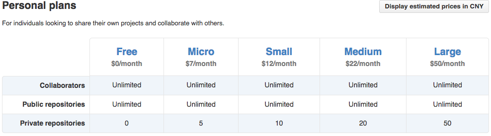
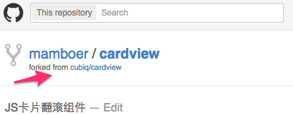

课程概述
Github，全球最大的开源社交编程及代码托管网站。
2006年jquery源码从google code迁移到了github;
2008年Github Inc. 正式成立；
2013年新用户注册数超过了300万，中国用户数居第三位；
2013年总项目数量超过1000万；
2013年152,135,090次代码推送；
…
所有这些数据在今年还在不断飙升中…
作为热爱前端开发、页面重构的你，是否其中一份子？
如果不是，《Githuber》这门课程将手把手带你了解和使用github平台的各种常用功能，让你赶上在世界代码开源分享社区里混迹的潮流。
课程目的
让学员，
- 了解github提供的各种功能；
- 学会使用github注册个人帐号、建立个人源码项目；
- 学会向个人源码项目中提交代码、修改代码、删除代码；
- 学会将个人域名绑定至github项目，利用github托管个人（或组织）的静态站点；
- 学会拉取别人的源码项目并做为个人的开发分支；
- 了解和使用神奇的gh-pages分支；
最终成为能够熟练使用Github的人。
课程对象
前后端开发工程师。
特别适用于没有接触过Github，同时想了解Github，有意愿在Github上创建个人作品站点、分享开源代码的同学。
了解Github的基本功能
Github的基本功能主要包括以下几个方面：
- 源码项目（Repository）
- 源码片段（Gist）
- 站点（Github Pages）
- API
- 个人中心（User）
- 组织（Organization）
明细可参考下图:

创建Github账户
具体注册过程略。
选择付费计划

个人用一般选择免费计划，如果有需要托管一些私密非开源的项目，可以酌情选择其它的计划。
个人主页
注册成功后，可以通过https://github.com/xxx 访问个人主页，其中xxx是用户名
例如我的个人主页 为：https://github.com/mamboer

创建Github组织
在创建了个人账户后，为了方便项目代码的灵活组织，Github支持你创建组织。
组织的应用场景有点像我们线下的现实生活：
- 你可能有一个公司，公司里面的开源项目便适合挂在组织下面
- 你可能有三五码友，码友之间一起协作的项目也适合挂在组织下面
- 参加我们今天课程的所有同学，有着了解Github应用的共同兴趣，也可以当成一个小小的组织。
组织名和用户名一样，是具有唯一性的，下面我们为参加本堂课程的同学新建一个组织，名为xtutor（githuber已被抢注~~）。
入口
在个人主页的右上角可以找到创建组织的入口：

表单
填写组织表单：

管理界面
创建完成后的管理界面：

至此，我们学会了在github上创建个人账户、组织，这些信息存储在github服务器上的，与我们平时工作的项目代码还无法建立联系。如何建立github和本地项目代码间的联系呢？我们需要使用GIT客户端。
搭建Git客户端环境
对于Github的各种基本功能，为了降低非开发者的使用门槛，Github平台提供了非常完善的体验良好的基于图形界面的操作；同时也为开发者提供了基于命令行的高效操作方式。
本课程将着重使用基于命令行的操作方式，很多习惯图形界面操作的同学一开始会不习惯，但坚持下去，最后你会喜欢上便捷的命令行操作的。
在介绍源码项目相关功能之前，我们需先在自己的电脑上搭建Git的客户端环境，因为Github主要使用GIT这个分布式的版本控制系统来管控源码，尽管它也支持SVN。
既然使用基于命令行的操作方式，我们需要什么？一个能够执行各种Git命令的给力的命令行终端。
在windows下搭建Git客户端环境-Git Bash
提到windows的命令行终端，大多数人会联想到CMD，我要推荐的是Git Bash，它模拟linux下的命令行终端bash，因而Git好友度更高。要知道Git本身也是linux阵型的产物~~

下载和安装Git Bash非常简单，去msysgit.github.io 下载安装msysgit即可。
安装完毕后打开Git Bash验证是否安装成功：
在MAC系统下搭建Git客户端环境
MAC下OSX 10.9 (Mavericks)和10.10(yosemite)貌似默认安装了GIT。
可先到终端下利用git --version验证下是否有git，如果没有可利用homebrew安装git。
安装homebrew
灰常简单，参考brew.sh
安装git
brew install git
安装完毕后打开终端验证是否安装成功：

Git客户端与Github的通讯
现在我们有了Git的客户端环境，又有了Github的帐号，在开始利用Git来创建、复制Github项目等等操作之前，我们还有必要了解下Git客户端与Github服务器的通讯方式。
Github远程服务器的通讯支持https或者ssh协议，不管用的是哪一种协议，每次本地的Git客户端与Github远程服务器端的数据交换都涉及登录与验证的问题。我们教程中涉及的Git客户端与Github服务器的通讯选用ssh协议，利用基于密钥的ssh安全验证，可以避免每次发生数据交换时输入用户名、密码。所以在开始与Github服务器打交道之前，我们需先在本地与服务器之间配置ssh安全验证。
想详细了解ssh协议的同学可自行百科下，这里简单仅提下它的原理：
在客户端的电脑上创建一对密匙，并把公用密匙放在需要访问的服务器上。如果你要连接到SSH服务器上，客户端软件就会向服务器发出请求，请求用你的密匙进行安全验证。服务器收到请求之后，先在该服务器上你的主目录下寻找你的公用密匙，然后把它和你发送过来的公用密匙进行比较。如果两个密匙一致，服务器就用公用密匙加密“质询”（challenge）并把它发送给客户端软件。客户端软件收到“质询”之后就可以用你的私人密匙解密再把它发送给服务器，从而完成安全验证。
Github的SSH Key配置
以下操作步骤涉及的命令，windows系统请打开Git Bash输入，Mac系统请打开Terminal输入。
设置Git的用户名和邮箱
$ git config --global user.name "用户名"
$ git config --global user.email "x@y.com"
注意：x@y.com是你注册Github时的邮箱名
生成SSH KEY密钥
1.查看是否已经有了ssh密钥
cd ~/.ssh
如果没有密钥则不会有此文件夹，有则备份删除
2.创建密钥
$ ssh-keygen -t rsa -C “x@y.com”
按3个回车，密码为空。
接着会有类似下面的提示：
Your identification has been saved in /home/tekkub/.ssh/id_rsa.
Your public key has been saved in /home/tekkub/.ssh/id_rsa.pub.
The key fingerprint is:
………………
最后得到了两个文件：id_rsa和id_rsa.pub
3.添加密钥到客户端的ssh代理应用中
ssh-add ~/.ssh/id_rsa
4.在github上添加ssh公钥
这要添加的是“id_rsa.pub”里面的公钥，可用记事本打开复制到粘贴板。
打开https://github.com/ ，登陆后点击右上角的设置(Setting)按钮进入设置页面，然后在页面的左边找到并SSH Keys，在Add SSH Key表单里将id_rsa.pub里面的内容粘贴进来。
注：标题(Title)最好输你的电脑名以便区分别的电脑的Key。
5.测试：ssh -T git@github.com
一切正常的话会返回类似下面的内容：
The authenticity of host ‘github.com (207.97.227.239)’ can’t be established.
RSA key fingerprint is 16:27:ac:a5:76:28:2d:36:63:1b:56:4d:eb:df:a6:48.
Are you sure you want to continue connecting (yes/no)? yes
Warning: Permanently added ‘github.com,207.97.227.239′ (RSA) to the list of known hosts.
ERROR: Hi tekkub! You’ve successfully authenticated, but GitHub does not provide shell access
Connection to github.com closed.
6.关于代理工具：proxifier
有些公司出于安全的原因，连接github服务器可能需要走代理哦。
这时候可以使用proxifier软件，新建规则让以下进程走代理：
ssh;git*;
如下图：
配好ssh key，接下来开始正式介绍Github的各个功能点。
使用Github-创建项目
在Github上创建项目非常的简单，有两种形式：
复刻（Fork）- 复刻别人的项目
Fork是Github描述跨用户复制、协作维护代码的专用名词。
如果你在github上看到自己喜欢的开源项目，就可以Fork到自己的账户上来进行二次开发，添加特性什么的。
每个开源的Github项目右上角的地方都有一个Fork按钮：
复刻的项目的左上角都会有『forked from』的标注：

Fork过来的项目和被Fork的项目关系是独立的，所以你可以随意修改通过Fork操作建立的项目，而不用担心是否影响原项目。
如果你在Fork过来的项目上开发了一些新功能点，并想将它们分享给原项目的作者，你可以向原项目发起pull requests：
Pull Requests 相当于告诉原作者：
『我在你代码的基础上开发了些新功能，你看看要不要将它们合到你的代码中去』。
新建项目
点击页头右上角的加号，再点击New repository，
然后按提示输表单即可，
注：Owner的地方，如果选择用户名，则表明项目挂在个人用户上；如果选择上面新建的组织xtutor，则表明项目挂在组织上。
项目对应的ssh地址
项目的SSH地址的格式是固定的：
- git@github.com:用户名/项目名.git
- git@github.com:组织名/项目名.git
也可以到项目首页（https://github.com/用户名/项目名）的右边栏可以找到项目的ssh地址：
使用Github - 基本的GIT命令
1，clone
clone命令用于将远程服务器的项目复制到本地电脑。
复制到本地后，在项目的根目录下会有一个.git的隐藏目录，这个目录是Git自动生成的，用来存放项目的配置信息、文件以及目录的索引信息等等。
使用clone命令复制下来的代码，默认是远程服务器项目的默认分支。在Github上新建项目时如果没有做过别的配置，默认分支为master。如果想将本地的代码切换成别的分支，可参考下面的checkout命令。
使用方法：
git clone git@github.com:mamboer/xxx.git
2，checkout
将指定的分支签出至当前工作目录。
使用checkout之前，需要先使用clone命令哦。
使用方法：
# 切换至gh-pages分支
git checkout gh-pages
3，add
add命令不是向项目添加文件的意思，而是添加文件至索引区域（理解成暂存区域也行），add仅仅是索引指定的文件，告诉git我们需要将指定的文件列入版本控制中去。
使用方法：
# 索引某个文件
git add 文件名
# 索引txt结尾的文件
git add *.txt
# 索引当前目录下所有未索引的文件，包括已被删除的
git add -A
4，rm
与add命令相反，rm用于移除指定文件及其索引信息。
使用方法：
# 移除指定文件及其索引信息，如果被移除的文件不是服务器端最新版本的文件则会报错
git rm 文件名
# 开关-f
# 强制移除指定文件及其索引信息，不管是否服务器端最新版本的文件
git rm -f 文件名
# 强制递归移除指定目录
git rm -rf 目录名
# 开关--cached
# 仅仅删除文件的索引信息，保留文件在当前目录位置。相当于告诉git：当前被移除的文件不再做版本控制。
git rm --cached 文件名
5，mv
用于移动或者重命名指定文件或文件夹。
使用方法：
# 移动指定文件
git mv 文件名 目标文件名
# 开关-f
# 强制移动指定文件
git mv -f 文件名 目标文件名
6，commit
add、rm、mv命令仅仅是针对项目代码当前版本被操作的文件，操作记录保存至索引区域（暂存区域）但不会保存至最终的项目版本中去。
如何将已索引文件的各种变更（添加、修改、删除）提交至本地最终的项目代码中去，同时生成项目的一个版本快照呢？
这便是commit命令的作用了。
注：commit命令仅仅是将文件的变更提交至本地生成新的版本快照，并不会影响github上面的代码哦。
使用方法：
# 提交修改的文件
git commit -m "说明信息"
#提交新增的、删除的、修改的文件
git commit -a -m "说明信息"
7，reset
reset命令用于回滚前面的add、rm、mv、commit操作。
使用方法：
# git add 文件名的回滚操作
git reset 文件名
# git commit的软回滚操作
# 回滚至上一次提交的版本，并保留本地的文件修改
git reset --soft HEAD~1
# git commit的硬回滚操作
# 回滚至上一次提交的版本，并放弃本地的文件修改
git reset --hard
# 或
git reset --hard HEAD~1
8，push
commit仅仅是将代码变更提交到本地版本中。push则是将该版本推送至远程服务器。
使用方法：
# 将本地的master分支推送至远程服务器的master分支
git push origin master
# 将本地的当前分支推送至远程服务器
# 至于推送至远程服务器什么地方，git会从本地项目代码根目录下的配置文件（.git/config）中查找相关的push配置。
# 如果没有相关的push配置，则推送至远程服务器的默认分支。
git push
如果想将本地的修改版本同时提交至远程服务器的master分支和gh-pages分支，那么可以在.git/config的配置中加入以下内容：
[remote "origin"]
push = +refs/heads/master:refs/heads/gh-pages
push = +refs/heads/master:refs/heads/master
9，pull
pull命令用于拉取远程服务器项目代码的最新版本至当前工作目录。
使用方法：
# 拉取master分支的最新版本并合并至本地代码库的当前版本中去
git pull origin master